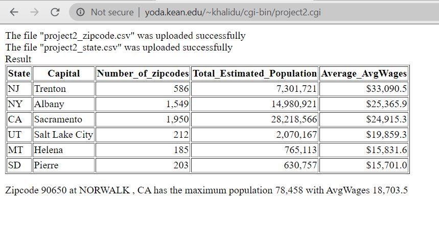

After click the “Upload” button, a Python program named project2.cgi will be called to receive the two uploaded files and save them at upload folder. The Python program will then run Java program (source code is Project2.java) to process these two uploaded CSV files.
A Java program (Project2.java) will first implement the SQL database join, group by and order by functions and should print the results in HTML TABLE format - a state summary table for each state
The joined results and calculated values would be accurate. A program will join both files, group the data for each state and calculate the values.
Each state in the zipcode URL should have only one row. If a state is not in the zipcode file, it should NOT be in the summary table
The output would be aligned well. The capital should left-aligned and numbers should be right-aligned. The average AvgWages should have one decimal
The results should be sorted by Average_AvgWages from high to low
The same Java program should show the following information under summary table: Zipcode 10156 at NORWALK, CA has the maximum population 78,458 with AvgWages $18703.5
The maximum population zipcode and calculated results should be accurately displayed
The numbers should right-aligned in currency format. The average AvgWages should have only decimal, and the population should have no decimal
If the numeric column is empty or N/A, it should not include that record in the average. It should be still included in the count (number_of_zipcodes)
The Java program will use the same function/method to print the output on the screen and save the same output into a file in HTML format at the same folder. Then, a Python program should catch the Java printout (NOT read from file) to display on the browser
A Java program will handle the following errors/exceptions and print the corresponding messages
Any exceptions happened during the processing the files
After the Java program executed and the results displayed on the browser, Python program will send an email to the programmer with Subject: project 2 result. The email body will state “The Java program was run at DATE/TIME stamp, and the result is available to view at HTML_LINK.” The link would be URL of Project2_results.html. When the programmer clicks on the link, the results will be displayed on the browser – the same as Java program’s output on the browser